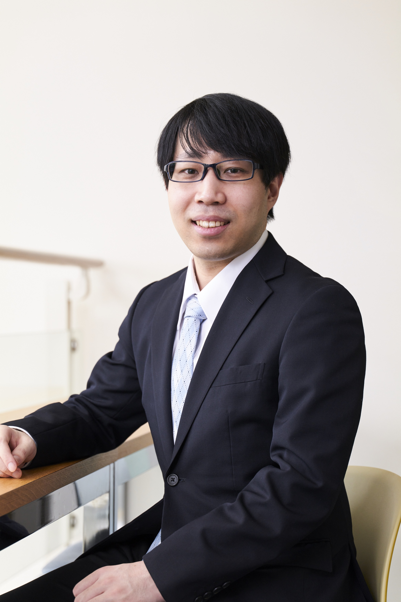
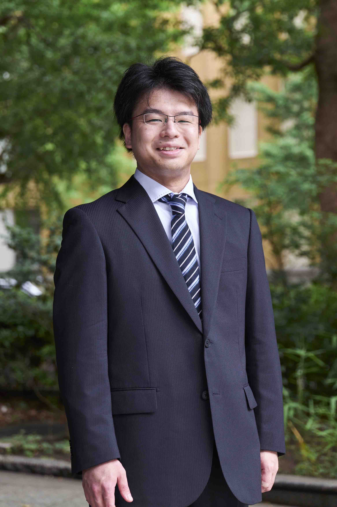
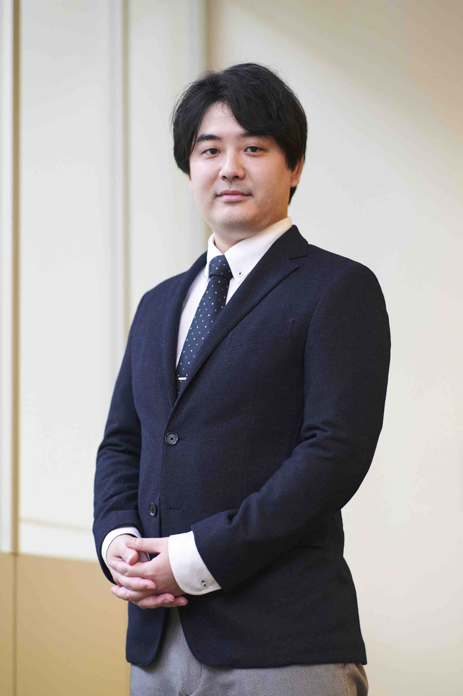
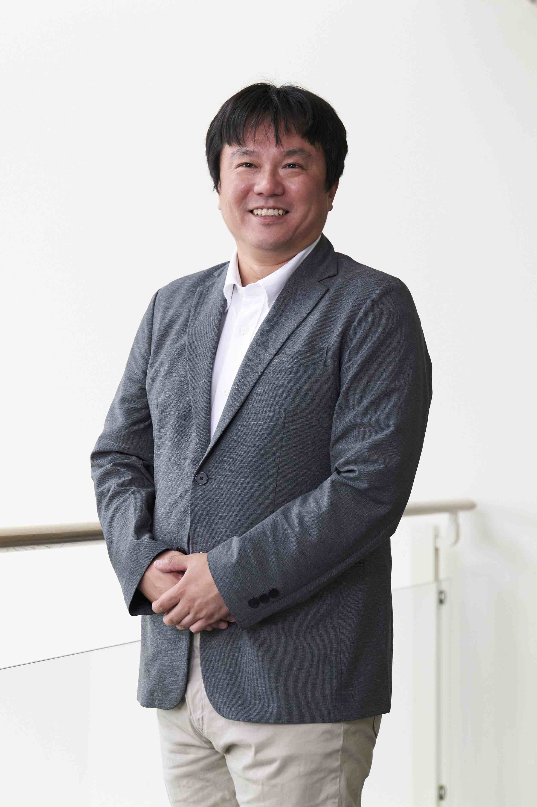
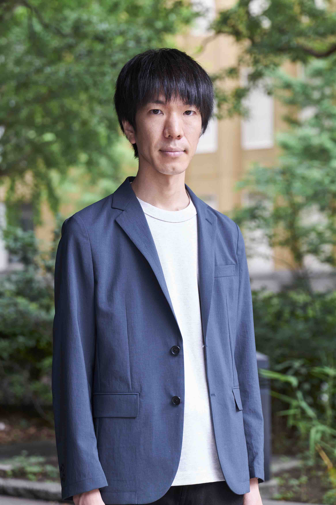
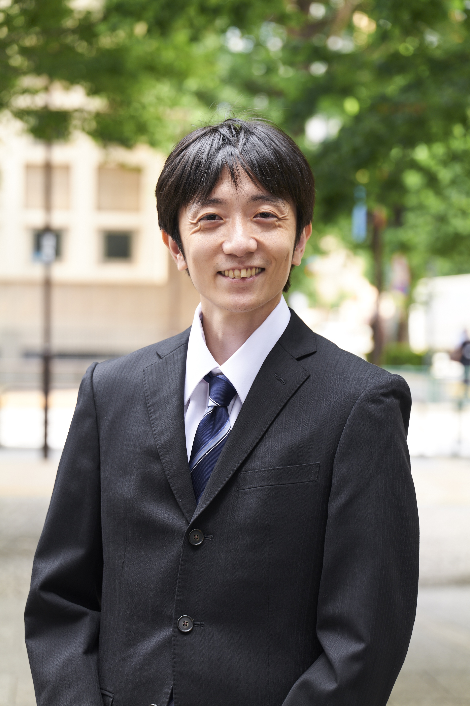

Hot Topics
- 2023-11-8 2024年度19期生募集パンフレットは こちらからご覧いただけます
- 2023-11-8 2024年度19期生募集ポスターは こちらからご覧いただけます
- 2023-11-2 2024年度カリキュラムの以下の項目について掲載しました
(講義・ 講師・ 時間割) - 2023-11-1 2024年度受講生募集 情報を掲載しました
- 2023-10-27 2024年度受講生向け講座説明会 情報を掲載しました
- 2023-10-5 修了生の声 2022年度 17期生8名分を掲載しました
- 2023-4-5 第17期受講生の活動成果を公開しました
トップエスイーの講義を科目受講
| 講義名 | 講義名 | 講義初回 |
|---|---|---|
トップエスイーのユーザ登録をすでにされている場合、以下の「お申し込み」ボタンを押して申し込んでください。
ユーザ登録はこちらのページよりお願いします。
- トップエスイーの成果はどうなのか？ 修了生の声をご覧ください．
- トップエスイー紹介動画がYouTubeでご覧いただけます．
- 2022-11-14 月刊「先端教育」10月号にトップエスイーの記事が掲載されました．記事の抜粋はこちらからご覧いただけます
修了生の声(対談)(2023/11/24 トップエスイー第19期生向け講座説明会にて)
15期生 富士通株式会社 鳥野剛史
15期生 株式会社NTTデータグループ 呉隆司
17期生 キヤノン株式会社 野澤友暉
2022年度修了生の声
こちらの修了生の声のページでは，修了生自らが，トップエスイーで得られたことを，ビデオでご説明します．

良い刺激を受けることができました
東芝デジタルソリューションズ株式会社
林 裕之 様
東芝デジタルソリューションズ株式会社
林 裕之 様

自身の技術の裾野を広げたい方にお勧め
株式会社デンソー
千葉 裕介 様
株式会社デンソー
千葉 裕介 様
企業内では得難い貴重な経験
株式会社日立製作所
宮田 康平 様
株式会社日立製作所
宮田 康平 様

効率的にスキルアップできる一年です
鹿島建設株式会社
佐藤 眞輝 様
鹿島建設株式会社
佐藤 眞輝 様

知識の獲得と実践の両面で充実した一年でした
NTTテクノクロス株式会社
定行 裕輔 様
NTTテクノクロス株式会社
定行 裕輔 様
新たな価値観や考え方を身に付けられました
株式会社NTTデータアイ
小野村 明宏 様
株式会社NTTデータアイ
小野村 明宏 様

AI開発に実践的な取り組みをしたい
富士通株式会社
加藤 雅也 様
富士通株式会社
加藤 雅也 様

さらなる学習意欲へ繋げられる
キヤノン株式会社
古谷 浩平 様
キヤノン株式会社
古谷 浩平 様
情報社会を支えるスーパーアーキテクトを育成します

トップエスイーは，ソフトウェアエンジニアリングの技術・理論・ツールを使いこなすスーパーアーキテクトを育成する，社会人向けの教育プログラムです． 先端的かつ実践的で演習を中心とした講義を通じて学習し，実問題に適用する課題を，1年の課程の中で行います． 実践的な技術だけでなく，学術的な理論や各種ツールの適用により，高度に情報化された社会を支える人材を育成します．
トップエスイーを受講して得られる能力は？

産業界の実践と，学界の理論を融合した教育プログラムを提供することによって，以下の３つの価値を提供します．
- 最先端のソフトウェア技術の習得
- 実開発現場へ適用可能な技術の習得
- モデリング能力の育成と問題解決能力の向上
受講をお勧めしたい方々

トップエスイーは，自身のエンジニアとしての質を高めたいと考える次のような方々に有益なカリキュラムを提供します．
- 最新の知識体系を得て，仕事の限界を積極的に打破したいと考えている．
- ソフトウェアエンジリニアリングの知識を，基礎からしっかりと学習をしたい．
- 新しい知見をもとに視野を広げ，自身の仕事の幅を広げたい．